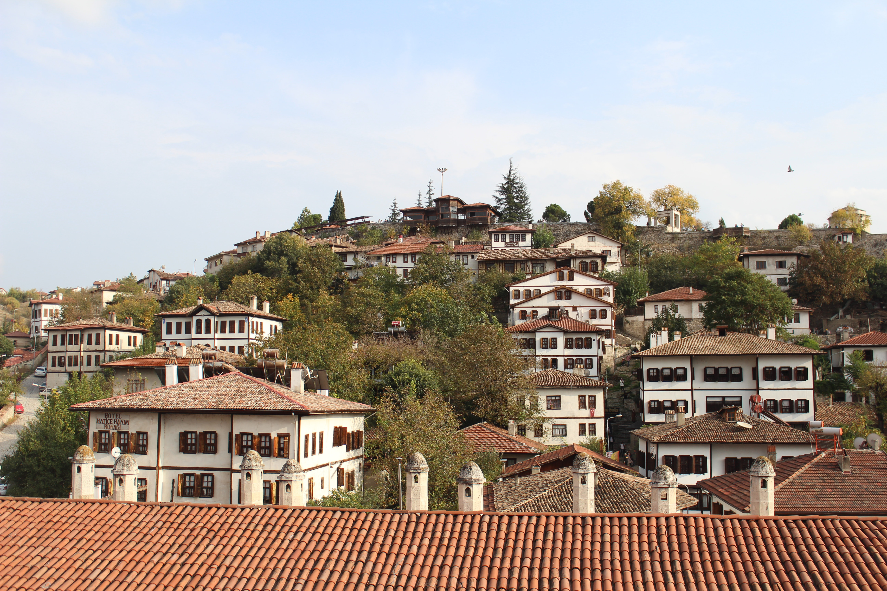
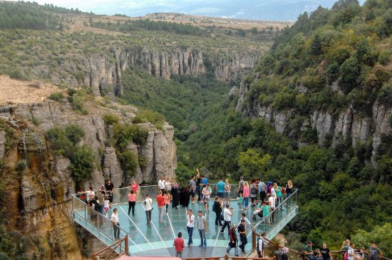
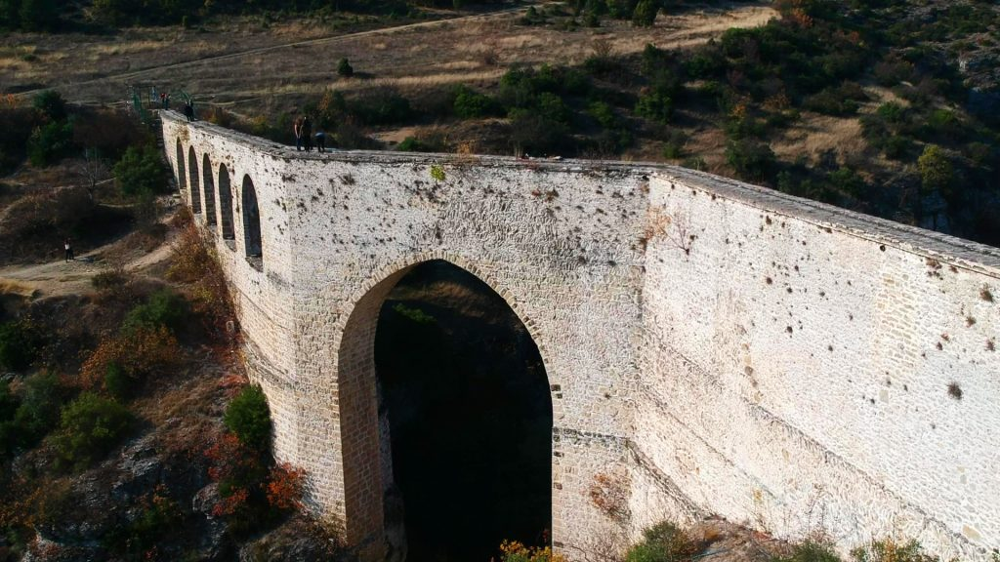
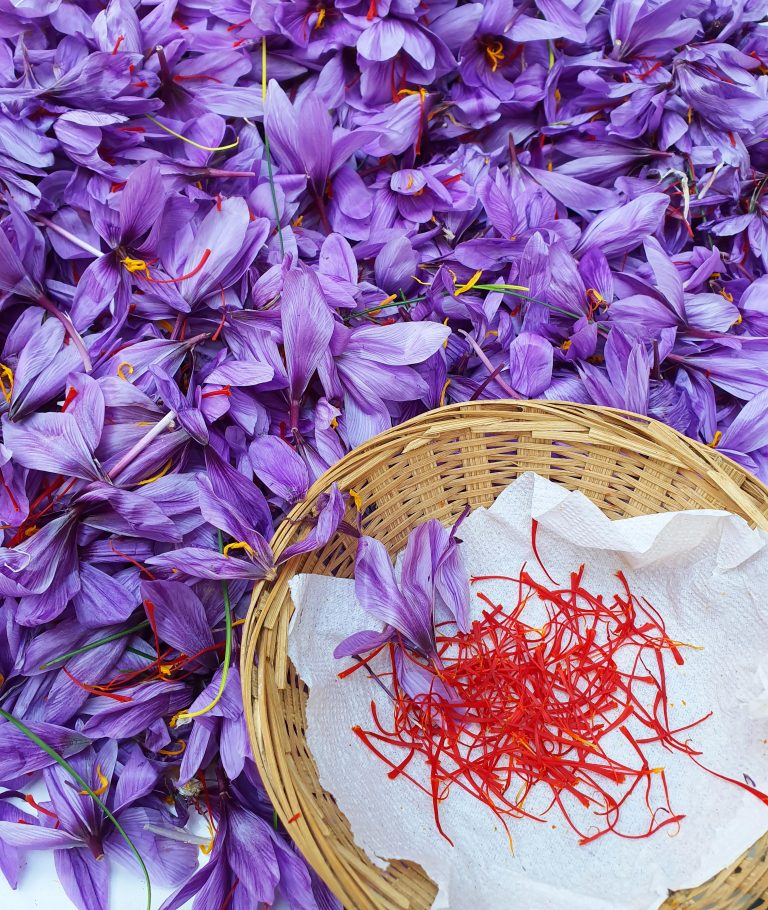
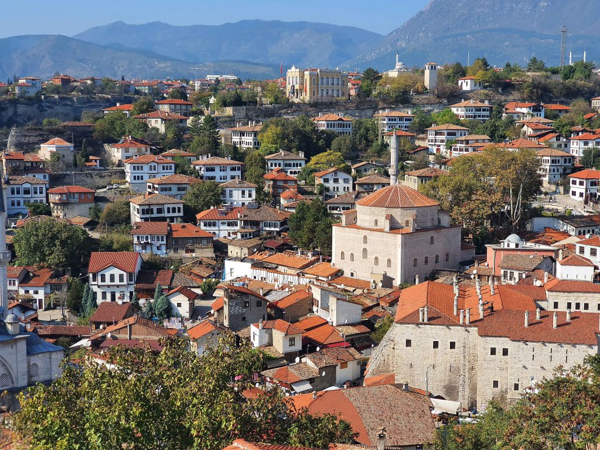

ESKİ ÇARŞI EVLERİ

CAM TERAS

İNCEKAYA SU KEMERİ

SAFRAN ÇİÇEĞİ

HIDIRLIK

KENT MÜZESİ
UNESCO MİRAS ŞEHRİ SAFRANBOLU
KARABÜK'Ü TANIYALIM
KARABÜK ADI NEREDEN GELİYOR?
KARABÜK TARİHİ
GEZİLECEK YERLER
2. Nostalji Gezi Evi
3. Çitdere Tabiat Koruma Alanı
4. Bulak Mencilis Mağarası
5. Hadrianapolis Antik Kenti
6. Safranbolu Kent Tarihi Müzesi
7. Köprülü Mehmet Paşa Camii
8. İncekaya Su Kemeri
9. Cam Teras Safranbolu
10. Safranbolu Eski Çarşısı
11. Tokatlı Kanyonu
12. Aladağ Mesire Alanı
13. Eğirova Göleti
14. Baklabostan Şelalesi
15. İncekaya Kanyonu
16. Sırçalı Kanyonu Yaban Hayatı Geliştirme Sahası
17. Şeker Kanyonu
18. Baklabostan Tabiat Parkı
19. Safranbolu Saat Kulesi
20. Gürcü Yaylası
21. Hıdırlık Tepesi
22. Yenice Seyir Terası
23. Çikolata Müzesi
24. Sarıtunç Tabakhane Müzesi
25. Kaymakamlar Gezi Evi